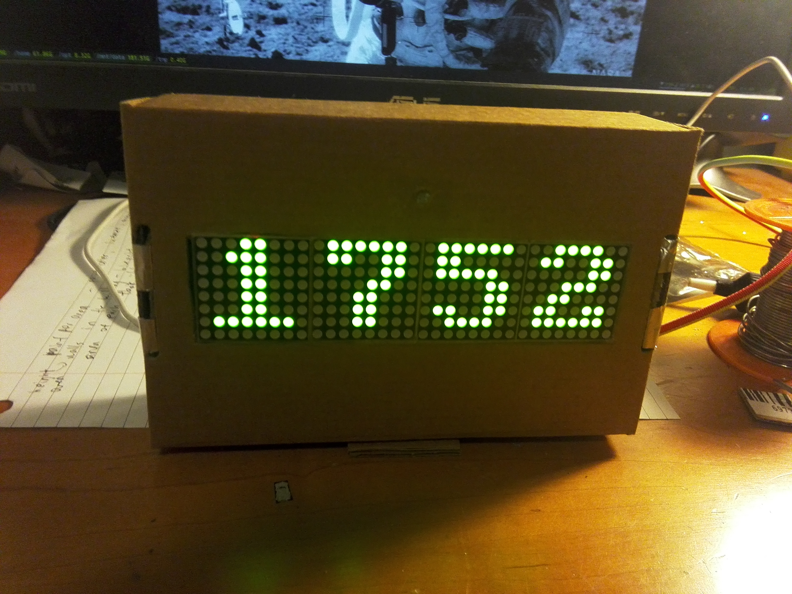
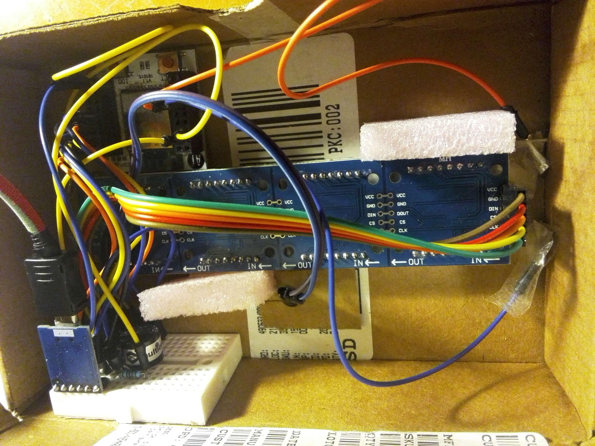
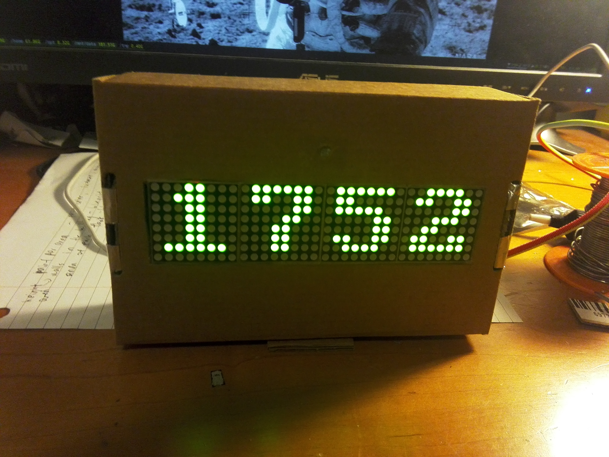
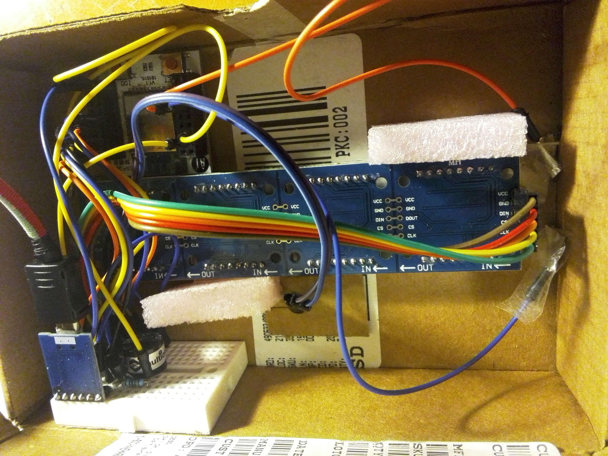
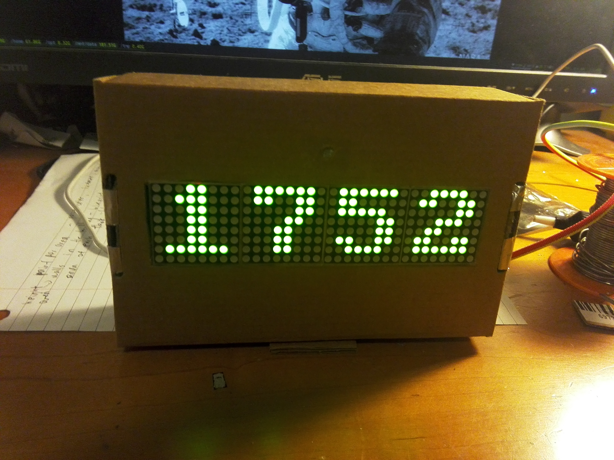
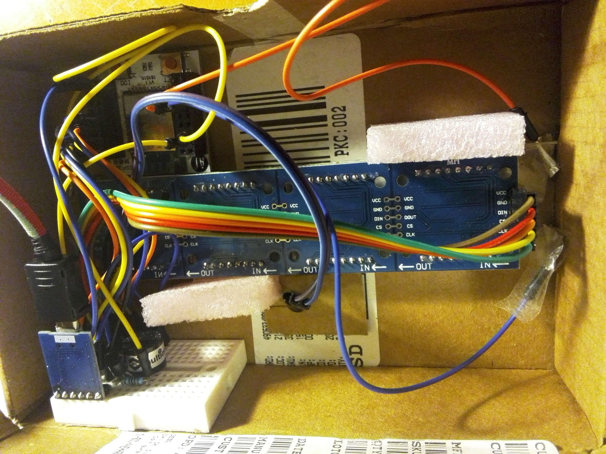

ESP32 鬧鐘
2020-03-09
好久以前買了個ESP32，不知道要拿來幹嘛所以就變成鬧鐘了。功能有：自動連網對時、天氣顯示(使用openweathermap.org)、可按照禮拜設定的鬧鐘、自動亮度調整（用了光敏電阻）。按鈕是把鋁箔紙用膠帶貼在電線尾端然後接到ESP32的電容感應，程式碼是用C寫的。
 



好久以前買了個ESP32，不知道要拿來幹嘛所以就變成鬧鐘了。功能有：自動連網對時、天氣顯示(使用openweathermap.org)、可按照禮拜設定的鬧鐘、自動亮度調整（用了光敏電阻）。按鈕是把鋁箔紙用膠帶貼在電線尾端然後接到ESP32的電容感應，程式碼是用C寫的。

